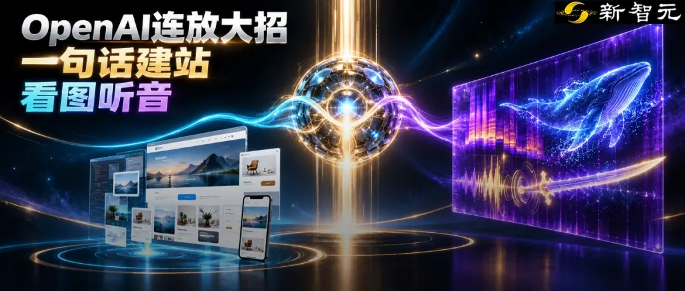
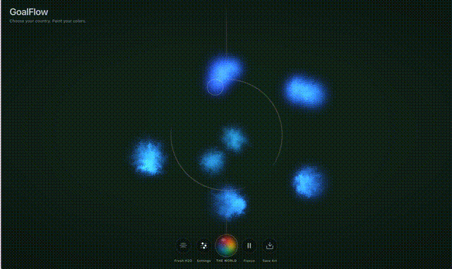
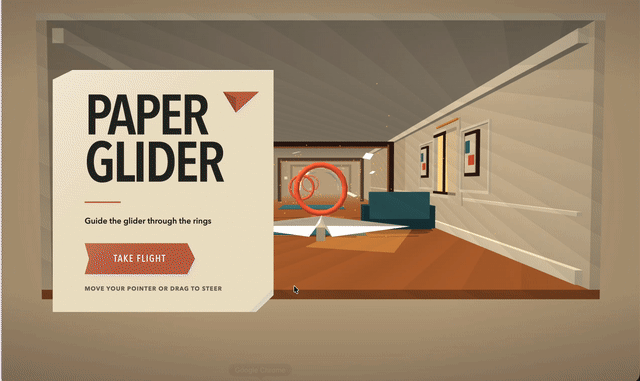

新智元报道
新智元报道

就在刚刚，OpenAI又进化了。
现在，备受瞩目的ChatGPT Sites正式开启公测！
哪怕你一行代码都不会写，只需几句自然语言提示或上传一张草图，就能像写Google文档一样，在十几分钟内生成一个高度专业、功能复杂的交互式网站。
只用自然语言就能完成前端开发，传统的建站SaaS行业正遭受巨大的颠覆。
而且，还有一个新消息传出。
在底层技术侧，GPT-6展现出了惊人的跨模态能力。
在无音频播放、完全断网的状态下，仅凭一张Mel频谱图（声音的波形可视化图像），GPT-6就能认出深海蓝鲸的叫声，甚至还能认出《星球大战》中的光剑音效。
这就显示着，AI的多模态理解，已经彻底打破了人类的感官壁垒。
它不再是笨拙地「模仿」人类的看与听，而是进化出对物理世界数据结构的「原生解码」能力！

曾几何时，拥有一流的个人网站，是程序员和专业设计师的特权。
后来，出现了Dreamweaver，再后来，有了Wix、Squarespace甚至Tilda等拖拽式建站SaaS工具。
但今天，ChatGPT Sites的公测，直接把建站门槛踏碎了。
知名科技媒体Fast Company以及Wonder Tools主理人Jeremy Caplan实测后表示：ChatGPT Sites带来的体验极其颠覆！
「现在，制作一个美观的网站就像创建一个Google Doc一样简单。」
目前，该功能已向ChatGPT Plus、Pro、Business、Enterprise和Edu用户全面开放。
它是如何工作的？过程无比简单。
1.描述你的愿景： 用几句话写下你想要的网站类型、目标受众。
2.喂给它素材： 如果有喜欢的网页截图、手绘的草图，直接上传。
3.提出功能要求： 想要链接按钮？嵌入式视觉效果？还是复杂的交互元素？直接告诉它。
4.喝杯咖啡等待： 视复杂程度，大约10到15分钟后，一个完整的网站就诞生了。
注意，这不再是简单的「套模板」，而是真正的Vibe Coding！
早期测试者们，已经用它做出了不少神仙项目。
首先，是实用类页面。
有人用它做出一份完美的媒体套件赞助页、一个设计现代的旧金山活动指南，甚至是一个支持将商品拖拽进购物篮的野餐用品现代在线商店。
另外，艺术家Drue Kataoka用它生成了一个名为GoalFlow的艺术创作工具。
用户选择国旗后，能在流体模拟画布上用国旗的颜色进行「绘画」，颜料会像水中的色素一样自然旋转和漂移。

这种涉及复杂流体物理引擎的前端页面，过去需要高级前端工程师耗费数周，现在只需几句提示词。
最后，还有物理引擎游戏。
你甚至可以几句话做一个类似Jenga的《Glass Towers》游戏，自带逼真的物理效果；或者做一个控制纸飞机穿过圆环的街机小游戏《Paper Glider》。

更可怕的是它的迭代能力。
当ChatGPT给出初稿后，你可以直接在侧边栏使用「注释工具」，像批改作业一样在网页上画圈：「把这个按钮的颜色改了」、「这里的字体换成无衬线体」、「替换这张图片」。
它不仅能听懂，还能无缝修改。
显然，行业洗牌已经不可避免。
虽然早期的AI建站工具（如Lovable、Bolt）依然有其灵活性，Claude的Artifacts和Claude Design也在交互式UI上表现出色，但ChatGPT Sites的王炸在于，它融入了极其庞大的生态系统。
如果你在一个「ChatGPT Project」中工作，它会自动读取你的品牌风格指南、Logo库，生成的网站天然就带着你的品牌DNA。
现在，前端工程师已经被降维成了「提示词产品经理」，而那些还在依靠「拖拽建站」收取高昂月费的传统SaaS企业，如果不能迅速转型，恐怕熬不过今年冬天了！

回想一下，从PC时代的命令行（CLI），到视窗时代的图形界面（GUI），再到如今大模型时代的自然语言界面（LUI），人机交互的历史，就是一部不断降低操作门槛的历史。
ChatGPT Sites的本质，是将前端开发从「工程学」降维成了「表达学」。
过去，你要建一个网站，你的大脑需要经过多层翻译。
我要卖东西（意图） -> 我需要一个购物车和支付系统（产品逻辑） -> 我需要写HTML/CSS/JS（前端代码） -> 我需要对接数据库（后端逻辑）
现在，ChatGPT Sites把中间的折腾全部抹平了。
用户的输入端被彻底降维成了纯粹的自然语言，也就是最原始的「意图」。
传统软件SaaS的核心壁垒是「我们把代码封装成了好看的按钮供你点击」，而大模型的降维打击是：你只要张嘴说话就行。
从此，一切围绕「如何让非程序员更容易写代码/建网站」的过渡性工具，都将在这个意图直接生成结果的「端到端」生成时代，失去生存空间。
而且，就在今天，AI研究员ChrisGPT和Max Rubin公布的一组测试，让无数音频工程师和AI从业者震撼了。
这个测试很简单：把声音变成一张图，让GPT-6直接读图。
ChrisGPT给GPT-6上传了一张Mel频谱图，这是一种将声音的频率、时间、能量可视化为二维图像的技术）。
过程中，他未播放任何实际音频、大模型处于未联网状态。
唯一提示词就是 「这个声音来自大自然中的一种动物/哺乳动物。」
GPT-6回答说： 「鲸鱼，可能是一头蓝鲸。」
全网震惊了。
因为，它不仅答对了，还超出我们的认知——这背后的推理逻辑，已经超越了简单的图像匹配！
要知道，蓝鲸发出的是极低频的叫声。
但是在自然界中，狮子、老虎和大象的叫声同样落在40-200赫兹的低频区间。仅凭频谱图上50赫兹附近有一团能量，是无法断定它是鲸鱼的。
GPT-6是怎么做到的？音频工程师分析认为，GPT-6敏锐地捕捉到了「能量随时间持续的形态特征」。
它不是在看一个点，而是在理解声波在这个特定物理空间中是如何随时间流淌和衰减的。
在极少上下文的情况下，从一张「声音的图片」直接零样本猜中动物类别，这种能力令人无比惊讶。
另一位测试者Max Rubin的演示，更是令人印象深刻。
他测试了非自然音效，结果显示，Astra能够直接从Mel频谱图上，零样本识别出《星球大战》中光剑挥舞的声音！
Max惊叹道：「我们现在甚至连表面都还没触及。」
虽然在科研领域，学术界早就开始尝试用频谱图结合视觉模型来做鲸鱼叫声检测，甚至训练专用的LLM去读Mel图做语音任务。
但是，这是通用大模型首次被公开证实，能够在没有任何专项微调的情况下，做出这种级别的跨模态推理。
这就好比，你从来没有教过一个人如何看乐谱，你只是给他看了一张交响乐总谱。
结果，他不仅能在脑海中「听」到声音，还能准确告诉你，第二小节的长号吹错了一个音。
人类的感知世界是有巨大局限性的。
我们必须依靠空气振动鼓膜，大脑才能将物理震动转化为「声音」的电信号。在人类的潜意识里，声音就是用耳朵「听」的，图像就是用眼睛「看」的。这是几百万年进化给我们设定的「感官壁垒」。
早期的多模态AI，实际上是在「模仿」人类。我们给它听音频文件，给它看图片，试图让它像人一样去理解。
但GPT-6 Astra识别频谱图的意义在于：大模型正在摆脱人类生物学器官的束缚！
对于GPT-6来说，一头深海蓝鲸的一声悠长鸣叫，和绝地武士挥舞光剑时的撕裂声，本质上没有任何区别——它们都只是物理世界中能量的波动形式。
当这种波动被转化为Mel频谱图这样一种数学和几何的表达时，GPT-6就可以直接去「阅读」物理规则本身。
它不需要长耳朵，它不需要「听」见声音，它可以直接「看」懂声音的物理公式。
这意味着，AI的多模态理解已经从「模仿人类的感官」，进化到了对物理世界数据结构的「原生解码」。
今天它可以看频谱图认出蓝鲸；明天，如果给它看地震波的图像，它能不能直接预测下一次断层破裂？如果给它看脑电波的图像，它能不能直接读出你在想什么？
人类是通过肉身去感受宇宙的投影，而现在，AI正在直接阅读宇宙的源代码。
参考资料：
编辑：Aeneas 大卫